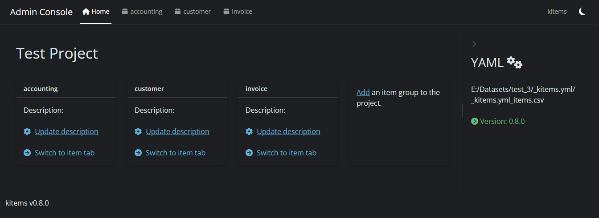
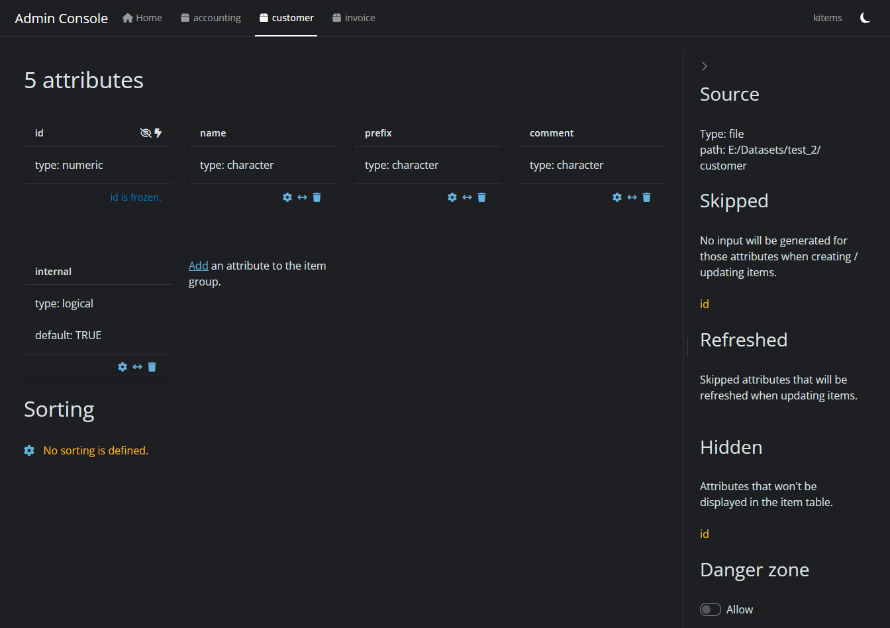
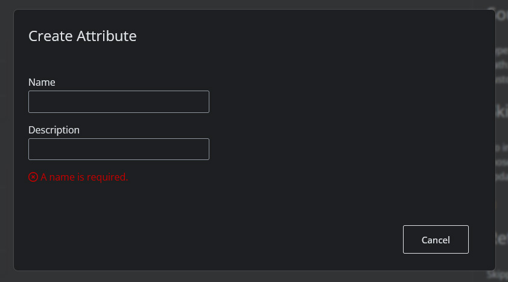
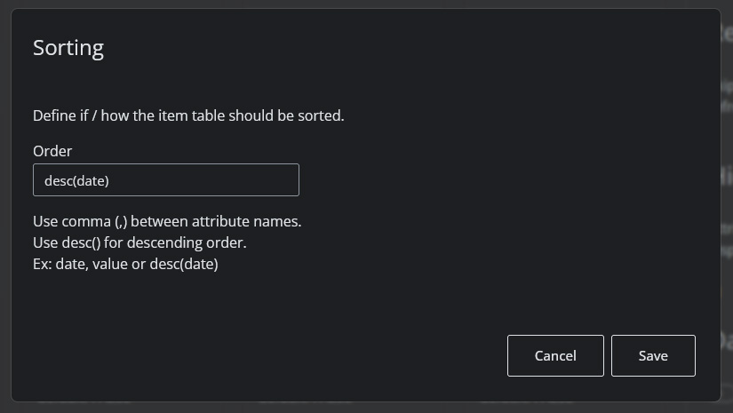
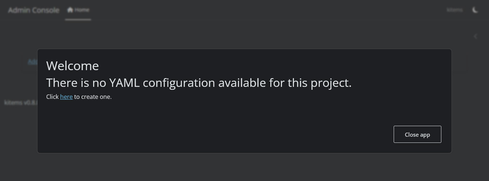
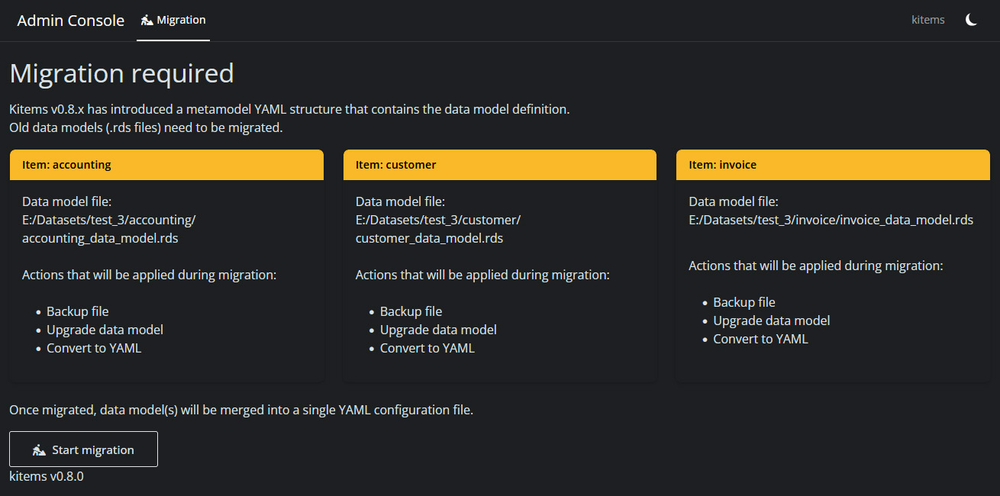
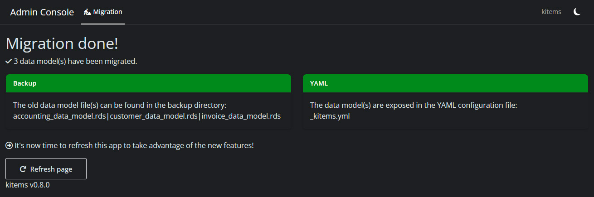

kitems::admin()Administration
The framework provides administration capabilities to cover data governance tasks.
Admin console
An administration console is delivered as a standalone Shiny app within the package.
The main reason is that in most cases, it’s not recommended to have the data governance accessible from within the application. Another reason is that administration tasks are not expected to be performed on regular basis. Therefore there is no need to have the main module server and the session overloaded with reactives & observers that won’t be called.
To run the app, use the admin() function:
The admin console gives access to all the data models declared in the YAML config file.
It will look for this file in the path defined by the R_KITEMS_PATH environment variable.
Features
Home
The admin console has been completely redesigned in version 0.8.0.
It now offers a home tab where to see all item groups related to the project (the ones declared in the common YAML config file):

Data governance
Each item group declared in the YAML file gets a specific tab:

It contains all the specs defined for the item group:
- the attributes of the data model
- the sorting instruction
- where to find the data
- behaviors (ex. hidden attributes)
- a danger zone where to delete the item group.
Attributes
One of the benefits of having the data model stored in a YAML file is that we don’t need to set a value for each parameter of an attribute.
So the admin console only displays what has been set. (for ex. in the above screenshot, name has no default but internal has one.)
Important
Each item group is created with a mandatory
idattribute.
This attribute holds the unique key to identify a specific item in the group and can’t be updated1.
From there you can add attributes to the data model or update existing ones thanks to the attribute wizard:

It is also possible to modify the order of the attributes to define the order of the columns in the item table view (use the double arrow icon in the footer of the attribute card).
Sorting
The tab also displays the sorting instruction(s) and allows to configure it:

This will affect the order of the items displayed in the item (table) view.
- multiple rules are allowed
- both ascending/descending order are supported
Note
There is no limit set to the number of rules you can define, but sorting affects the performance (more rules & more items leads to more computation time) so it’s recommended to stick with one or two rules.
Danger zone
The danger zone toggle (at the bottom of the sidebar) allows access to actions that cannot be undone.
At this time, it will only display the delete item group button.
Caution
Deleting an item group will delete the corresponding data model in the YAML file as well as the item file! It is recommended to perform a backup before.
Initialization
When the console detects no YAML config file in the given path, you will be asked if you want to create a one:

Migration
From version 0.8.0, data governance is carried by a unique YAML config file for the project.
If the admin console detects older data model files in the path, it will perform the migration to the YAML format:

Once the migration is done, a report will be displayed:

Old data models are archived in a backup directory corresponding to their version (ex. backup_0_7_2).
Tip
It is recommended to run the admin console after a package upgrade to check whether a migration is needed or not.
It is also recommended to check the changelog page.
Useful Links
- Data model – core concepts